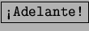

Cómo sabemos si una computadora esta dentro de la red?
Es una pregunta relativamente simple de contestar sabiendo su Número IP. knu se encuentra en K-Internet-Utilidades de Red. Se ingresa el número IP (por ejemplo 127.0.0.1 6.1) y a continuación  como muestra la figura 6.13.
Dará información de la conexión. Normalmete en enlaces entre máquinas el dato que más importa es time que expresa la latencia de red. Aquí es irrelevante, puesto que es la máquina local. De no andar esta simple prueba es posible de que la configuración de red no sea correcta.
También se pueden poner nombres de máquinas, como por ejemplo www.google.com siempre que esté clickeado el rectangulo que dice Resolver el nombre.